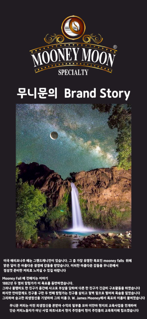
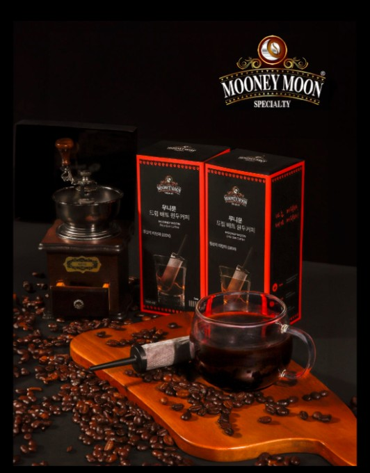
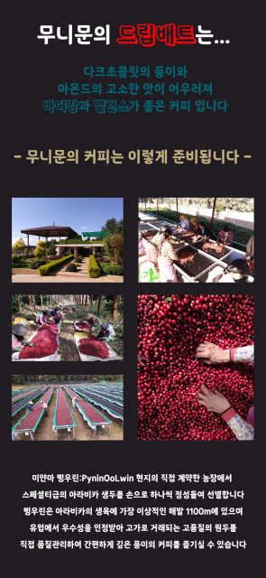
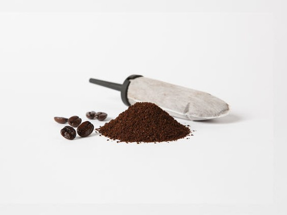
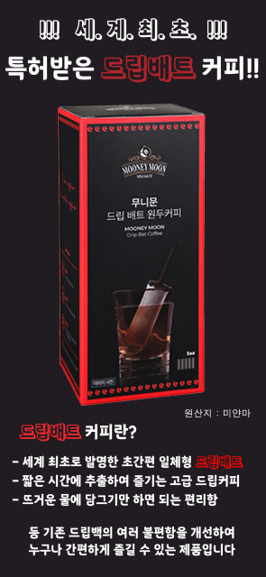
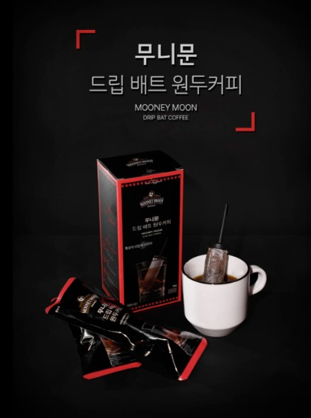
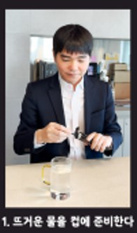
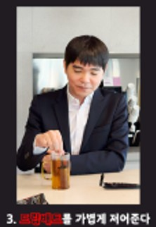
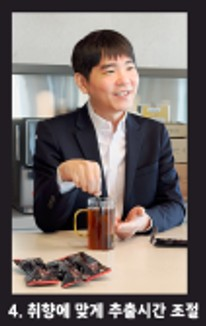
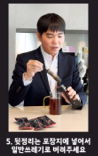

BRAND STORY
자연이 들려주는
커피 이야기
무니문은 자연에서 시작됩니다.달빛 아래 흐르는 시간,
정직한 농부의 손길,
그리고 좋은 원두를 향한 마음이
한 잔의 드립배트 커피에 담겨 있습니다. ORIGIN STORY
DRIP BAT COFFEE
PREMIUM DRIP BAT COFFEE
자연에서 시작된 한 잔의 커피.
미얀마의 정직한 원두와 무니문의
드립배트 커피가 당신의 일상에
깊은 향과 여유를 전합니다.


BRAND STORY
ORIGIN

깨끗한 자연과 농부의 손길이 만나는 커피의 시작점입니다.

좋은 향과 맛을 위해 원두를 정성스럽게 선별합니다.

다크초콜릿과 아몬드의 고소한 풍미를 담았습니다.

DRIP BAT COFFEE
무니문 드립배트 커피는 미얀마 프리미엄
원두를 사용하여 깊은 향과 풍부한
바디감을 담았습니다.
뜨거운 물만 있으면 누구나
쉽고 간편하게 카페 수준의 커피를
즐길 수 있습니다.
HOW TO BREW

01커피 추출에 알맞은 뜨거운 물을 준비합니다.
컵에 드립배트를 넣고 물을 천천히 부어줍니다.

03향이 잘 우러나도록 드립배트를 부드럽게 움직입니다.

04원하는 농도에 맞게 천천히 추출합니다.

05사용한 드립배트는 포장지에 넣어 깔끔하게 버립니다.